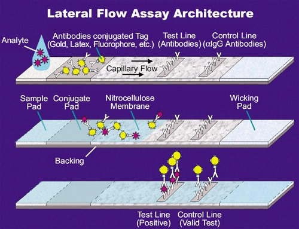
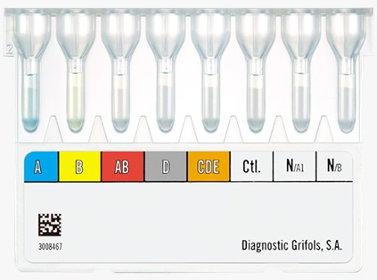
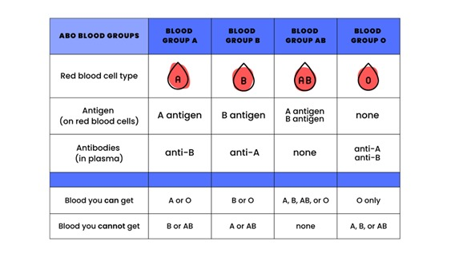
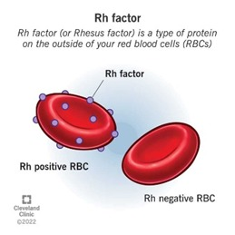

INTRODUCTION
Blood typing is the backbone of transfusion
medicine, organ transplantation, and prenatal diagnosis. proper
identity of someone's blood group is vital to assuring
compatibility with the medical procedure concerned, fending off
detrimental reactions, and controlling hemolytic sickness in the
new child. the 2 most important blood organization structures
applicable in laboratory and clinical use are ABO and
Rh(Rhesus). The distinction among these corporations lines lower
back to the presence or absence of particular antigens on the
surfaces of RBCs. even though conventional serological
techniques form the premise of blood typing, the tendencies in
molecular diagnostics strategies added an optimistic platform
for advanced accuracy and reliability. Blood organization checks
are based totally on antigen-antibody reactions. Antigens are
distinct molecular styles on the RBC floor; they practice to
numerous components of a specific type of blood. on the other
hand, antibodies are proteins located in plasma in order to
attach to and understand precise antigens. The reactions are
those in which an antibody has observed its matching antigen and
reason a clumping of RBCs, termed agglutination. This
agglutination is the idea for blood grouping identification. The
take a look at is achieved through blending an antiserum with
known antibodies, which includes anti-A, anti-B, and anti-D (for
Rh typing), with the blood. The presence or absence of
agglutination on unique wells of exams suggests the blood
institution of the issue. The procedure has won utility in
medical laboratories due to its rapidity in results and
specificity. standards of blood typing exams may also encompass:
1.Hemagglutination response, widely adopted in serological blood
typing, is composed of mixing a blood pattern with antisera
containing antibodies towards A, B, and RhD antigens. inside the
presence of a selected antigen a agglutination occurs.
2. Lateral flow Immunoassay (LFIA) A lateral flow immunoassay
(LFIA) is a paper-based totally diagnostic technique that
exploits capillary movement to move blood samples alongside
channels lined with immobilized antibodies. As visible changes
on the take a look at strip suggest the presence of blood type,
the antigen-antibody interaction between the antigen and the
antibody occurs. This take a look at is specially appropriate
for rapid, factor-of-care prognosis

3. Microcolumn Gel Agglutination Microcolumn technology uses gel
matrices loaded with antibodies. when a blood pattern is
brought, the RBCs are allowed to traverse the gel and the
agglutination pattern is discovered for determination of blood
type. extra sensitive with the potential for automation. The ABO
Blood group system The ABO blood group system through the
discovery of Karl Landsteiner in 1901 classifies blood into four
principal agencies depending upon the presence or absence of A
and B antigens on the floor of RBCs as follows: ·A antigen on
RBCs and anti-B antibodies in plasma, Blood kind A. ·B antigen
on RBCs and anti-A antibodies in plasma, Blood kind B. ·both A
and B antigens on RBCs with neither anti-A nor anti-B antibodies
in plasma, Blood type AB. ·Neither A nor B antigens on RBCs with
each anti-A and anti-B antibodies in plasma, Blood type O.

The ABO Blood group system The ABO blood group system through
the discovery of Karl Landsteiner in 1901 classifies blood into
four principal agencies depending upon the presence or absence
of A and B antigens on the floor of RBCs as follows:
·A antigen on RBCs and anti-B antibodies in plasma, Blood
kind A.
·B antigen on RBCs and anti-A antibodies in plasma, Blood
kind B.
·both A and B antigens on RBCs with neither anti-A nor
anti-B antibodies in plasma, Blood type AB.
·Neither A nor B antigens on RBCs with each anti-A and
anti-B antibodies in plasma, Blood type O.

ABO blood kinds are decided with the aid of adding anti-A and
anti-B sera to a blood sample and seeking out agglutination
patterns. for instance, if agglutination occurs with anti-A
serum however no longer with anti-B serum, the blood kind is A.
Rh Blood institution system The Rh blood organization machine,
which changed into located in the Forties, makes a speciality of
the D antigen:
•Rh-positive (Rh+): The D antigen is gift at the floor of the
RBCs.
•Rh-negative (Rh−): The D antigen is absent at the RBCs.

Rh typing is executed with the aid of blending the blood sample
with anti-D serum and if agglutination takes place then it's far
advantageous for Rh and if there's no agglutination then it's
negative for Rh. The Rh thing dedication has a completely
essential significance in the obstetric practice due to the fact
Rh incompatibility among mother and fetus could lead to HDN.
programs and significance correct typing of blood does no longer
assure a precise prognosis in various scientific fields:
•Blood transfusions: The blood institution need to be well matched in any other case the transfusion reaction can lead to rapid breakdown and bring about hemolytic transfusion reaction (HTR), which may prove fatal.
•Organ transplantation: Matching the blood companies similarly diminishes the risk of immune system rejection of the organ, except improving the probabilities for the transplant to be successful.
•pregnancy: prognosis of Rh incompatibility should be made as early as feasible in order that proper treatment, which includes the administration of Rh immunoglobulin (RhIg) can then be instituted to prevent HDN.
Topic 2
This is the content for topic 2.
Topic 3
This is the content for topic 2.